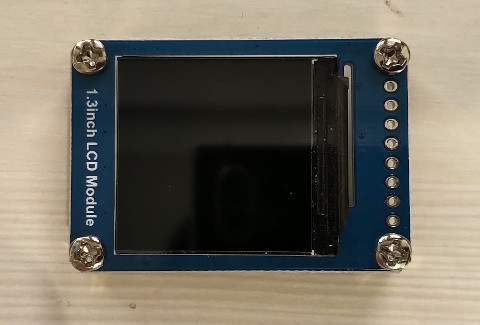
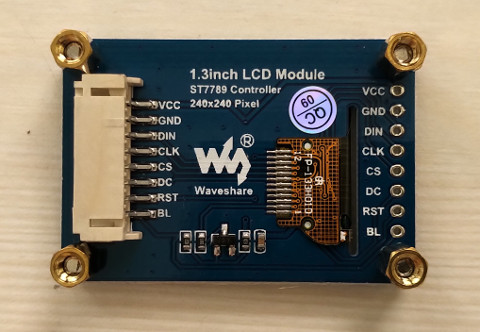
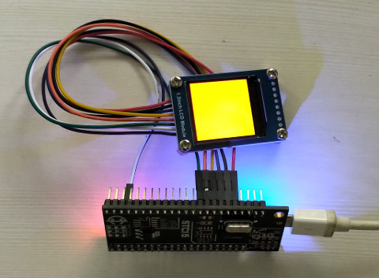

屏


#include "stc15w4k56s4.h"
#define CS P22
#define RST P24
#define SCK P21
#define SDA P20
#define DC P23
#define BL P25
void delayms(unsigned int ms)
{
unsigned int cnt = 0;
while (ms--) {
for (cnt = 0; cnt < 1000; cnt++) {
}
}
}
void gpio_init(void)
{
P0M0 = 0x00;
P0M1 = 0x00;
P1M0 = 0x00;
P1M1 = 0x00;
P2M0 = 0x00;
P2M1 = 0x00;
P3M0 = 0x00;
P3M1 = 0x00;
P4M0 = 0x00;
P4M1 = 0x00;
P0 = 0xff;
P1 = 0xff;
P2 = 0xff;
P3 = 0xff;
P4 = 0xff;
}
void spi_cmd(unsigned char cmd)
{
unsigned char bit = 0;
CS = 0;
DC = 0;
for (bit = 0; bit < 8; bit++) {
SCK = 0;
if ((cmd & 0x80) == 0x80) {
SDA = 1;
}
else {
SDA = 0;
}
SCK = 1;
cmd <<= 1;
}
CS = 1;
}
void spi_dat(unsigned char dat)
{
unsigned char bit = 0;
CS = 0;
DC = 1;
for (bit = 0; bit < 8; bit++) {
SCK = 0;
if ((dat & 0x80) == 0x80) {
SDA = 1;
}
else {
SDA = 0;
}
SCK = 1;
dat <<= 1;
}
CS = 1;
}
void lcd_init(void)
{
spi_cmd(0x36);
spi_dat(0x00);
spi_cmd(0x3a);
spi_dat(0x05);
spi_cmd(0xb2);
spi_dat(0x0c);
spi_dat(0x0c);
spi_dat(0x00);
spi_dat(0x33);
spi_dat(0x33);
spi_cmd(0xb7);
spi_dat(0x35);
spi_cmd(0xbb);
spi_dat(0x19);
spi_cmd(0xc0);
spi_dat(0x2c);
spi_cmd(0xc2);
spi_dat(0x01);
spi_cmd(0xc3);
spi_dat(0x12);
spi_cmd(0xc4);
spi_dat(0x20);
spi_cmd(0xc6);
spi_dat(0x0f);
spi_cmd(0xd0);
spi_dat(0xa4);
spi_dat(0xa1);
spi_cmd(0xe0);
spi_dat(0xd0);
spi_dat(0x04);
spi_dat(0x0d);
spi_dat(0x11);
spi_dat(0x13);
spi_dat(0x2b);
spi_dat(0x3f);
spi_dat(0x54);
spi_dat(0x4c);
spi_dat(0x18);
spi_dat(0x0d);
spi_dat(0x0b);
spi_dat(0x1f);
spi_dat(0x23);
spi_cmd(0xe1);
spi_dat(0xd0);
spi_dat(0x04);
spi_dat(0x0c);
spi_dat(0x11);
spi_dat(0x13);
spi_dat(0x2c);
spi_dat(0x3f);
spi_dat(0x44);
spi_dat(0x51);
spi_dat(0x2f);
spi_dat(0x1f);
spi_dat(0x1f);
spi_dat(0x20);
spi_dat(0x23);
spi_cmd(0x21);
spi_cmd(0x11);
spi_cmd(0x29);
}
void main(void)
{
unsigned int x = 0;
unsigned int y = 0;
gpio_init();
AUXR |= 0x80;
BL = 1;
RST = 0;
delayms(300);
RST = 1;
delayms(300);
lcd_init();
spi_cmd(0x2c);
for (y = 0; y < 240; y++) {
for (x = 0; x < 240; x++) {
spi_dat(0xf8);
spi_dat(0x00);
}
}
while (1) {
P55 = 0;
delayms(500);
P55 = 1;
delayms(500);
}
}
Makefile
all: sdcc main.c packihx main.ihx > main.hex flash: sudo stcgal -p /dev/ttyO2 -P stc15 -o clock_source=external main.hex clean: rm -rf main.ihx main.lst main.mem main.rst main.lk main.map main.rel main.sym main.hex
完成
